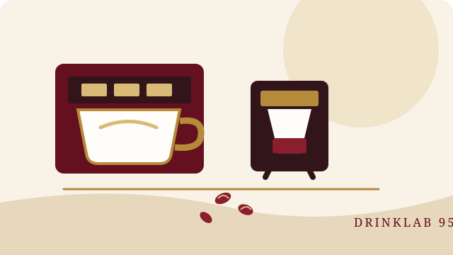
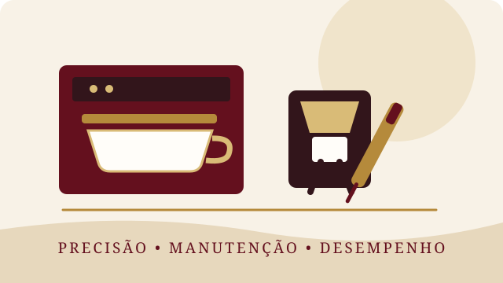

ESPECIALIDADE
DRINKLAB 95 INC
O café é o nosso centro.
A excelência, o nosso método.
Formação • Técnica • Experiência • Qualidade
Conhecer o nosso ecossistemaSCROLL ↓
01 · DRINKLAB 95 INC
Uma marca. Um ecossistema. Um propósito.
A DrinkLab 95 Inc é a estrutura central de um ecossistema dedicado ao café: formação profissional, experiências, soluções técnicas e desenvolvimento de negócios. A dança integra a nossa oferta complementar, valorizando a criatividade, a expressão e o desenvolvimento de talentos.
Nascemos com uma ambição clara: elevar a cultura do café e transformar conhecimento em competência, competência em confiança e confiança em oportunidades reais. Criamos formações, experiências e serviços que valorizam a técnica, a precisão, a criatividade e a excelência em cada detalhe.
Mais do que ensinar, queremos elevar padrões, despertar talentos e preparar profissionais para o mercado.
FORMAÇÃOEXPERIÊNCIAQUALIDADEEVOLUÇÃO
02 · DRINKLAB 95 ACADEMY

Aprenda. Pratique. Domine. Profissionalize-se.
A DrinkLab 95 Academy é o núcleo de formação profissional da nossa marca. Desenvolvemos formações práticas e orientadas para a realidade do mercado, para quem pretende iniciar uma carreira, aperfeiçoar competências ou elevar o padrão do seu negócio.
Trabalhamos com uma abordagem que aproxima teoria e prática, permitindo que cada formando desenvolva técnica, conhecimento, postura profissional e segurança para atuar.
Do Coffee Training à formação corporativa, desenvolvemos competências para profissionais e negócios. A Academia de Dança mantém-se como uma área complementar da marca.
03 · SETUP & SERVIÇOS TÉCNICOS DE CAFÉ

Manutenção. Precisão. Desempenho.
A DrinkLab 95 oferece soluções técnicas completas para máquinas de espresso, grinders e estações de café, desde a limpeza e higienização até à calibragem, diagnóstico, reparação e otimização da operação.
Os serviços incluem backflushing, limpeza de grupos, duchas, filtros e porta-filtros, calibragem de máquinas de espresso, regulagem de grinders, ajuste de moagem, dose e extração, verificação de pressão e temperatura, diagnóstico técnico e manutenção preventiva ou corretiva.
Também ajudamos a definir e organizar o setup do Coffee Shop: escolha e posicionamento de máquinas, grinders e acessórios, configuração da estação de café, fluxo de trabalho e soluções para melhorar qualidade, produtividade e consistência.
MÁQUINAS DE ESPRESSOGRINDERSCALIBRAGEMSETUP COFFEE SHOP
Solicitar serviço →04 · DRINKLAB STORE

Equipar. Criar. Evoluir.
A futura DrinkLab Store será a extensão comercial deste ecossistema: um espaço dedicado a produtos, equipamentos, acessórios, utensílios e soluções pensadas para profissionais e apaixonados por café, bar e bebidas.
A Store representa mais um passo da DrinkLab 95 na criação de um ecossistema completo, onde profissionais podem aprender, trabalhar, equipar-se e evoluir.
Aprender. Praticar. Criar. Evoluir.
05 · A NOSSA EQUIPA
Pessoas por trás da excelência.
Uma equipa multidisciplinar que combina liderança, técnica, formação e criatividade. Clique em cada profissional para conhecer o seu percurso e a sua contribuição para o universo DrinkLab 95.
FORMAÇÃO & SERVIÇOS
Escolha o seu próximo passo.
Programas e serviços pensados para desenvolver conhecimento, técnica, confiança e desempenho profissional.